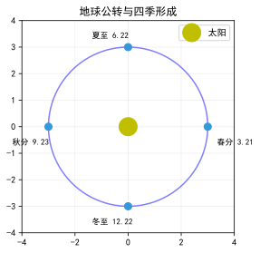
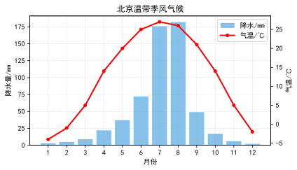

涵盖世界地理和中国地理全部核心考点 · 复习备考专用
| 对比 | 纬线 | 经线 |
|---|---|---|
| 定义 | 与赤道平行的圆圈 | 连接南北两极的半圆 |
| 形状 | 圆（除两极） | 半圆 |
| 长度 | 赤道最长→两极递减 | 所有经线等长 |
| 指示方向 | 东西 | 南北 |
| 度数范围 | 0°—90° | 0°—180° |
| 重要分界线 | 赤道（南北半球）、回归线、极圈 | 0°经线（本初子午线）、180°经线 |
赤道（0°纬线）—南北半球分界线，最长纬线
本初子午线（0°经线）—经过英国格林尼治天文台，东西经分界线
20°W 和 160°E—东西半球分界线（东半球：20°W→0°→160°E）
南北回归线—23.5°N/S，太阳直射的最南/北界
南北极圈—66.5°N/S，极昼极夜的最外边界
不要混淆东西半球分界线（20°W和160°E）与东西经度分界线（0°和180°）。
记忆口诀："小小为东，大大为西"——经度小于20°W或小于160°E为东半球；大于20°W或大于160°E为西半球。
例如：30°E虽属东经，但在东半球（20°W→0°→160°E范围内）；而170°W虽属西经，却在西半球（160°E以东至20°W是西半球）。
| 对比 | 自转 | 公转 |
|---|---|---|
| 绕转中心 | 地轴 | 太阳 |
| 方向 | 自西向东 | 自西向东 |
| 周期 | 约24小时（一天） | 约365天（一年） |
| 产生现象 | 昼夜更替、时间差异（东早西晚） | 四季变化、昼夜长短变化、五带划分 |

很多同学混淆山谷和山脊。记住：山谷是集水线（易发育河流），山脊是分水线。
考试中常考"哪里可能发育河流"——选山谷（等高线向高处凸出的位置）。
判断方法：在等高线弯曲处做一条切线，比较切线上海拔高低——中间高两边低是山脊，中间低两边高是山谷。
| 名称 | 连接水域 | 咽喉地位 |
|---|---|---|
| 马六甲海峡 | 太平洋—印度洋 | 海上生命线（东亚石油运输） |
| 霍尔木兹海峡 | 波斯湾—阿拉伯海 | 石油海峡（中东石油出口咽喉） |
| 苏伊士运河 | 地中海—红海 | 亚非分界，缩短欧亚航程 |
| 巴拿马运河 | 太平洋—大西洋 | 南北美分界，缩短美洲航程 |
| 直布罗陀海峡 | 地中海—大西洋 | 欧洲通往非洲的海上大门 |
| 白令海峡 | 北冰洋—太平洋 | 亚北美分界，国际日期变更线 |
| 德雷克海峡 | 太平洋—大西洋 | 南极洲最近，世界上最宽海峡 |
一天中最高气温出现在14时（午后2时），不是正午12时——正午太阳辐射最强，但热量积累需要时间（滞后约2小时）。
北半球陆地最热月7月，最冷月1月；海洋最热月8月，最冷月2月（海陆热力性质差异）。
南半球相反：最热月1月，最冷月7月。

| 气候带 | 气候类型 | 特征 | 分布 |
|---|---|---|---|
| 热带 | 热带雨林气候 | 全年高温多雨 | 亚马孙平原、刚果盆地、马来群岛 |
| 热带草原气候 | 全年高温，干湿季分明 | 非洲大部、巴西高原 | |
| 热带季风气候 | 全年高温，旱雨季分明 | 印度半岛、中南半岛 | |
| 热带沙漠气候 | 全年炎热干燥 | 撒哈拉沙漠、阿拉伯半岛、澳大利亚中部 | |
| 亚热带 | 亚热带季风气候 | 夏季高温多雨，冬季温和少雨 | 中国秦岭—淮河以南、日本南部 |
| 地中海气候 | 夏季炎热干燥，冬季温和多雨 | 地中海沿岸、加州、南非开普敦、澳大利亚西南 | |
| 温带 | 温带季风气候 | 夏季高温多雨，冬季寒冷干燥 | 中国北方、朝鲜半岛、日本北部 |
| 温带海洋性气候 | 全年温和湿润 | 西欧、新西兰、智利南部 | |
| 温带大陆性气候 | 冬冷夏热，降水少，温差大 | 亚欧大陆内部、北美中部 | |
| 寒带 | 苔原气候 | 长冬无夏，生长苔藓地衣 | 北冰洋沿岸 |
| 冰原气候 | 全年酷寒，冰雪覆盖 | 南极大陆、格陵兰岛内陆 |
最大半岛—阿拉伯半岛 | 最大群岛—马来群岛 | 最高高原—青藏高原 | 最高山峰—珠穆朗玛峰 | 最深湖泊—贝加尔湖 | 最低点—死海 | 最大湖泊（咸水）—里海 | 最长河流—长江
日本每年发生有感地震约1000次。防震措施：①建筑采用防震设计（抗震标准世界最高）；②每年9月1日"防灾日"全国演练；③家家有应急包；④地震预警系统可提前数秒到数十秒发出警报。日本与四川汶川同处环太平洋地震带，防震经验值得借鉴。
1. 战略位置：三洲五海之地，沟通大西洋和印度洋的枢纽。
2. 石油争夺：世界石油储量最多的地区，波斯湾沿岸储量占全球一半以上，大国争夺控制权。
3. 水资源之争：热带沙漠气候，水资源比石油还珍贵——约旦河、幼发拉底河、底格里斯河的水资源争夺激烈。
4. 宗教文化冲突：伊斯兰教、基督教、犹太教圣地重叠（耶路撒冷），民族矛盾复杂。
5. 外部势力介入：大国为石油利益和地缘影响力长期介入，加剧动荡。
这些因素相互交织，使中东长期成为世界的"火药桶"。
| 组织 | 简称 | 总部 | 主要职能 |
|---|---|---|---|
| 联合国 | UN | 纽约（美国） | 维护国际和平与安全 |
| 世界贸易组织 | WTO | 日内瓦（瑞士） | 促进全球贸易自由化 |
| 欧洲联盟 | EU | 布鲁塞尔（比利时） | 欧洲经济政治一体化 |
| 亚太经合组织 | APEC | 新加坡 | 促进亚太经济合作 |
| 上海合作组织 | SCO | 北京（中国） | 欧亚地区安全合作 |
| 金砖国家 | BRICS | — | 新兴经济体合作机制 |
非洲是世界上国家数量最多的洲（54个），不是"一个国家"！
"单一商品经济"指出口一两种初级产品（石油、咖啡、可可、铜矿、钻石），进口工业制成品——在国际贸易中处于不利地位（初级产品价格低、工业制成品价格高）。
发展出路：发展民族工业（如南非）、加强区域合作、发展多元化经济。
亚马孙雨林被称为"地球之肺"，提供全球20%的氧气。但近几十年因砍伐开垦（大豆种植、牧牛业）、采矿修路等原因，面积急剧减少。
生态功能：调节全球气候、涵养水源、保护生物多样性（全球10%的物种栖息于此）。
保护措施：建立保护区（如巴西国家公园体系）、卫星监测、发展可持续林业。
这是中考常考的"人地关系"典型案例。
| 对比 | 南极 | 北极 |
|---|---|---|
| 中心 | 南极洲（陆地） | 北冰洋（海洋） |
| 气候 | 酷寒、干燥、烈风（"白色荒漠"） | 比南极温和，有浮冰 |
| 代表动物 | 企鹅 | 北极熊 |
| 科考站 | 长城站（乔治王岛）、中山站、昆仑站、泰山站 | 黄河站（斯瓦尔巴群岛） |
| 最佳科考时间 | 11月—次年3月（暖季有极昼） | 6—8月 |
| 矿产资源 | 煤、铁、石油等储量丰富 | 石油、天然气、渔业 |
两湖两广两河山（湖北湖南广东广西河北河南山东山西）
五江二宁青甘陕（江苏江西浙江黑龙江新疆+宁夏辽宁+青海甘肃陕西）
云贵川北上天（云南贵州四川+北京上海天津）
港澳闽福内重海（香港澳门福建内蒙古重庆海南）
吉安台藏皖（吉林安徽台湾西藏）
注：共34个
我国行政区划分为省（自治区、直辖市、特别行政区）—县（市）—乡（镇）三级。
注意：自治区（内蒙古、广西、西藏、宁夏、新疆）是省级行政区，不等于"自治州"（地级）。
直辖市（北京、天津、上海、重庆）与省平级，直接管辖县/区。
| 阶梯 | 海拔 | 主要地形区 |
|---|---|---|
| 第一级阶梯 | 4000m以上 | 青藏高原、柴达木盆地 |
| 第二级阶梯 | 1000-2000m | 内蒙古高原、黄土高原、云贵高原、塔里木盆地、准噶尔盆地、四川盆地 |
| 第三级阶梯 | 500m以下 | 东北平原、华北平原、长江中下游平原、东南丘陵 |
一二级阶梯分界线：昆仑山—祁连山—横断山脉（昆仑山和祁连山之间不要漏掉祁连山！）
二三级阶梯分界线：大兴安岭—太行山—巫山—雪峰山（"大太巫雪"谐音"打太污血"帮助记忆）
注意：雪峰山在湖南省，不是终年积雪的雪山！不要望文生义。
| 对比项 | 长江 | 黄河 |
|---|---|---|
| 长度 | 6300km（中国第一） | 5464km（中国第二） |
| 发源地 | 唐古拉山（青海） | 巴颜喀拉山（青海） |
| 注入海洋 | 东海 | 渤海 |
| 上中下游分界 | 宜昌、湖口 | 河口、桃花峪 |
| 水能资源 | "水能宝库"（三峡世界最大水电站） | 水能集中在上游 |
| 航运价值 | "黄金水道"（7万km航道） | 航运价值低（水量小、泥沙多） |
| 主要问题 | 防洪、水污染 | 水土流失、"地上河"、凌汛 |
| 治理措施 | 退耕还湖、加固堤防 | 中游水土保持（植树造林、修建水库） |
长江经济带覆盖上海、江苏、浙江、安徽、江西、湖北、湖南、重庆、四川、云南、贵州11个省市，人口和GDP均占全国40%以上。
三大城市群：长三角城市群（龙头，上海为核心）、长江中游城市群（武汉）、成渝城市群（成都、重庆）。
优势：水资源丰富、航运便利（黄金水道）、劳动力充足、市场广阔。
挑战：生态保护压力大（化工污染）、区域发展不平衡（东强西弱）。
国家战略："共抓大保护，不搞大开发"——强调生态优先。
| 对比 | 北方地区 | 南方地区 |
|---|---|---|
| 气候 | 温带季风气候 | 亚热带/热带季风气候 |
| 耕地 | 旱地 | 水田 |
| 主食 | 面食 | 米饭 |
| 主要作物 | 小麦、玉米、大豆、苹果 | 水稻、油菜、甘蔗、柑橘 |
| 河流水量 | 小 | 大 |
| 冬季气温 | 0℃以下 | 0℃以上 |
| 传统交通 | 马车 | 船舶 |
| 传统民居 | 墙体厚（保暖）、屋顶坡度小 | 墙体薄（通风）、屋顶坡度大（排水） |
生物措施：植树种草、退耕还林还草。
工程措施：修建梯田、打坝淤地（在沟谷中筑坝拦截泥沙造地）。
农业措施：合理安排农业生产，减少坡耕地。
治理效果：近年来黄河泥沙量明显减少，黄土高原"由黄变绿"。
三大世界难题：高寒缺氧（海拔高，氧气稀薄）、冻土问题（季节性冻土使路基不稳定）、生态保护（穿越可可西里等自然保护区）。
解决措施：以桥代路（保护动物迁徙）、采取通风路基/热棒技术解决冻土问题。
意义：加强西藏与内地联系、促进旅游和资源开发、巩固国防。
最大大洲—亚洲 | 最大大洋—太平洋 | 面积最大国家—俄罗斯 | 人口最多国家—中国 | 印度（2024年超过中国） | 最高高原—青藏高原 | 最大平原—亚马孙平原 | 最长河流—尼罗河 | 最大沙漠—撒哈拉沙漠 | 最大群岛—马来群岛 | 最深海沟—马里亚纳海沟 | 最长的山脉—安第斯山脉 | 最大半岛—阿拉伯半岛 | 最大淡水湖—苏必利尔湖 | 最大咸水湖—里海 | 最深湖泊—贝加尔湖 | 最低点—死海
最长河流—长江 | 最大咸水湖—青海湖 | 最大淡水湖—鄱阳湖 | 最大岛屿—台湾岛 | 最大平原—东北平原 | 最大盆地—塔里木盆地 | 最高山峰—珠穆朗玛峰 | 最大内流河—塔里木河 | 最大沙漠—塔克拉玛干沙漠 | 最大林区—东北林区 | 最大渔场—舟山渔场 | 最大水利工程—三峡水电站 | 海拔最高铁路—青藏铁路 | 最大省级行政区—新疆 | 跨纬度最广省—海南
① 1月0℃等温线 ② 800mm等降水量线 ③ 亚热带与暖温带分界
④ 湿润与半湿润分界 ⑤ 亚热带季风与温带季风分界 ⑥ 水田与旱地分界
⑦ 南方与北方分界 ⑧ 冬季河流有无结冰期分界 ⑨ 落叶阔叶林与常绿阔叶林分界
北方—黑土地黄土地，旱地小麦，温带季风 | 南方—红土地绿土地，水田水稻，亚热带季风
西北—荒漠草原，灌溉绿洲农业 | 青藏—高寒雪原，河谷农业（青稞）
热带雨林全年湿，草原干季草木枯 | 沙漠全年都干燥，季风雨季分干湿
地中海夏干冬雨 | 温海全年温和湿 | 温季夏热冬也冷 | 温陆年较差大降水少 | 寒带全年都严寒
1. 东西半球：分界线是20°W和160°E，不是0°和180°！
2. 山谷vs山脊："凸高为谷"（等高线向高处凸）—山谷发育河流；"凸低为脊"—山脊为分水岭。
3. 长江vs黄河：长江注入东海，黄河注入渤海；长江发源于唐古拉山，黄河发源于巴颜喀拉山。
4. 中国地势：三级阶梯分界线要准确——一二级：昆仑—祁连—横断；二三级：大—太—巫—雪。
5. 季风区与非季风区：分界线是大兴安岭—阴山—贺兰山—巴颜喀拉山—冈底斯山（不同于阶梯分界线！）。
6. 最高气温时间：一天中最高温在14时（午后2时），不是12时。
| 河流 | 长度(km) | 所在大洲 | 注入水域 | 特征 |
|---|---|---|---|---|
| 尼罗河 | 6670 | 非洲 | 地中海 | 世界最长河流 |
| 亚马孙河 | 6440 | 南美洲 | 大西洋 | 流量最大、流域最广 |
| 长江 | 6300 | 亚洲 | 东海 | 中国第一大河 |
| 密西西比河 | 6020 | 北美洲 | 墨西哥湾 | 美国最长河流 |
| 黄河 | 5464 | 亚洲 | 渤海 | 含沙量最大 |
| 澜沧江—湄公河 | 4880 | 亚洲 | 南海 | 亚洲流经国家最多（6国） |